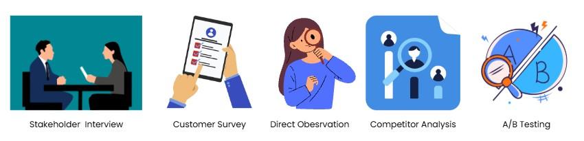
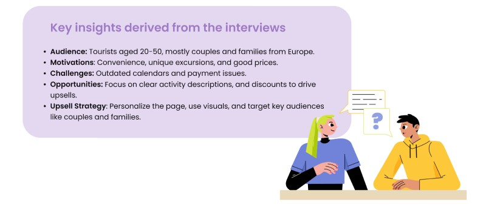
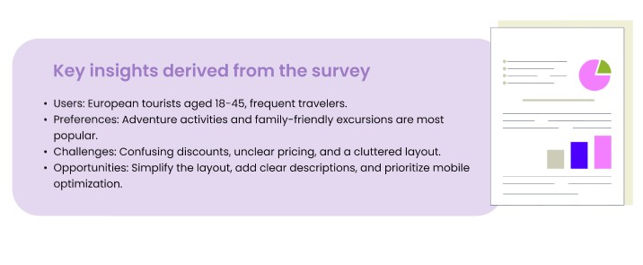
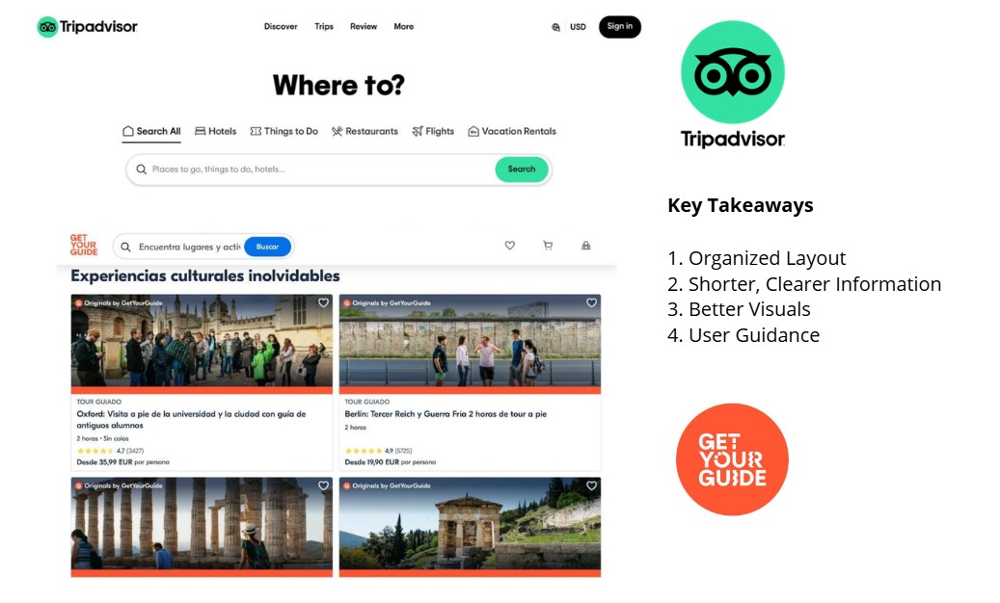
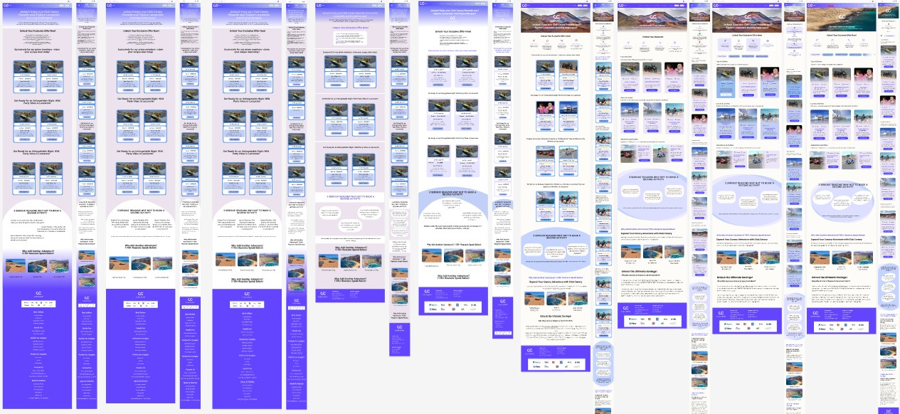
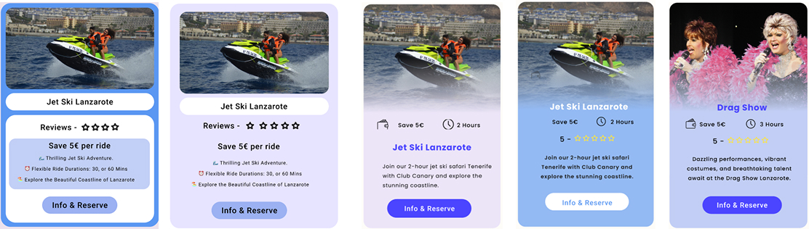
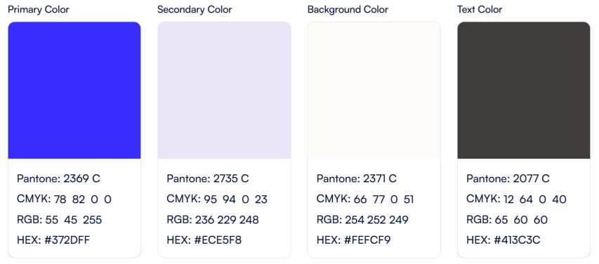
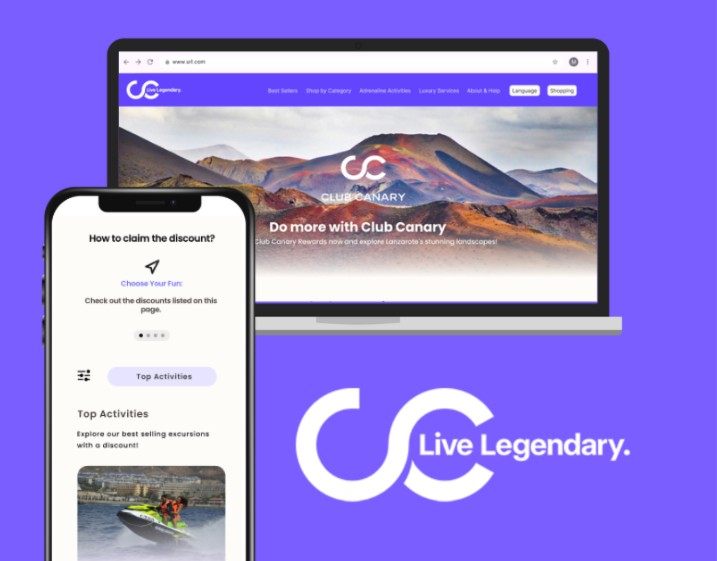

A research-driven UX/UI and performance redesign of Club Canary’s upsell page to improve clarity, mobile usability, and conversions.

Club Canary
UX/UI Designer
20 weeks
Figma · WordPress · HTML/CSS · JavaScript · .NET API
Solo designer · CEO stakeholder
Conversion · UX/UI · Performance
The upsell page appears only after a customer completes a booking, so users are already in a decision-making mindset. The existing page felt overwhelming: long text blocks, inconsistent formatting, unclear hierarchy, and activity cards with very little useful information. On mobile where most customers browse scanning the page was even harder, which led to hesitation and lost opportunities.

With this was a live company project, I needed to balance business goals (CEO) with user needs (travelers). I combined:
This mix of methods helped validate pain points from different angles and gave me a clear direction for the redesign.

The CEO shared that the upsell page generated revenue but was underperforming. Key issues from a business and technical perspective:

This set my initial goal: create a page that is faster, clearer, and visually aligned with Club Canary’s identity.
I sent a short survey to customers right after booking, while their experience was still fresh. The questions focused on clarity, usefulness, and first impressions of the upsell page.

Based on the survey and stakeholder input, I created four personas: the Family Planner, the Adventure Seeker, the Relaxation Lover, and the Spontaneous Traveler. Empathy maps surfaced recurring pain points: unclear pricing, lack of key details (duration, what’s included), and layouts that felt “too busy” right after completing a booking.

Reviewing other travel platforms confirmed a pattern: successful upsell experiences use structured cards, concise text, and strong visuals. This validated the idea of moving away from text-heavy layouts toward a modern, card-based approach.

The personas represented the different ways customers approach excursions: planning for a family, looking for adventure, searching for something relaxing, or deciding spontaneously. Mapping their emotions around the upsell moment helped me focus on:
These emotional insights guided how much content to show, how to structure cards, and how “loud” the page should feel visually.


During ideation, I translated research findings into concrete design directions. I explored multiple layout variations focusing on:

The design phase focused on turning the chosen direction into a clean, modern, and mobile-first interface. Every visual decision responded to specific pain points: clutter, vague content, and slow, text-heavy layouts.
The original upsell page suffered from inconsistent typography and dense text. I introduced a clear type scale (H1, H2, body, labels) and increased spacing around key elements. This made cards easier to scan and helped users understand each activity in seconds rather than having to read long descriptions.
Activity cards were restructured around what users said they needed most: a clear image, short description, duration, price, and an obvious next step. This removed guesswork, made comparisons easier, and supported faster decision-making.

I kept the overall palette light and minimal, using the brand accent color sparingly for CTAs and key highlights. This helped guide the eye without overwhelming users who had just finished a booking. The result is a modern layout that still feels like Club Canary.

Since most traffic comes from mobile, the layout was designed mobile-first: larger tap targets, simplified scrolling, and one main action per area of the page. The desktop version mirrors this hierarchy instead of adding unnecessary complexity. I iterated on spacing, card density, and button placement until both users and my stakeholder were satisfied.
To support better performance, I reduced heavy WordPress elements, optimized image use, and designed a layout that could later work with an API-based setup. Cleaner HTML and fewer decorative effects help the page load faster and reduce friction at a critical conversion moment.
The final design combines clarity, brand consistency, and technical awareness to create an upsell experience that feels modern, trustworthy, and easy to navigate.

To evaluate the redesign, I ran usability sessions with eight participants familiar with online booking and combined this with feedback from the CEO. Participants were asked to browse the upsell page, compare activities, and choose one to add after receiving a booking confirmation email.
During the sessions, they were asked to:
I created two versions of the page. Design A was based on user feedback: cleaner cards, shorter text, and clearer hierarchy. Design B reflected my stakeholder’s preferred approach: more text-heavy and closer to the original layout. The A/B test helped me compare both directions with real users and use data to discuss the final choice with the CEO.

Feedback highlighted the importance of clear button labels, logical grouping of information, and visuals that build trust. These insights were key in refining the final design and also helped me demonstrate to my stakeholder why the user-focused layout would perform better than the more text-heavy alternative.
This project showed me how to connect UX research, visual design, and technical constraints in a real business context. I learned how to:
Overall, the upsell page redesign strengthened my confidence in running a complete UX/UI process from research and ideation to design, testing, and measurable impact.
